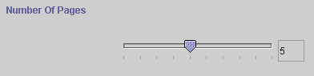
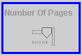

The SliderWidget is available for only slots of type Integer that are bounded, that is, they have both a Maximum and Minimum value. In this case, you can create a widget that looks like a slider bar, with the possible values shown as ticks on the bar. The value of the selection is shown in the right and changes automatically as you move the slider.

To make a SliderWidget, first select the widget you want to change, then select SliderWidget from the Widget Type Menu.
When you first create a SliderWidget, it will probably have a very ugly display. You must enlarge the widget to make the display useful.

A slider widget in need of editing.
Next: ImageMapWidget